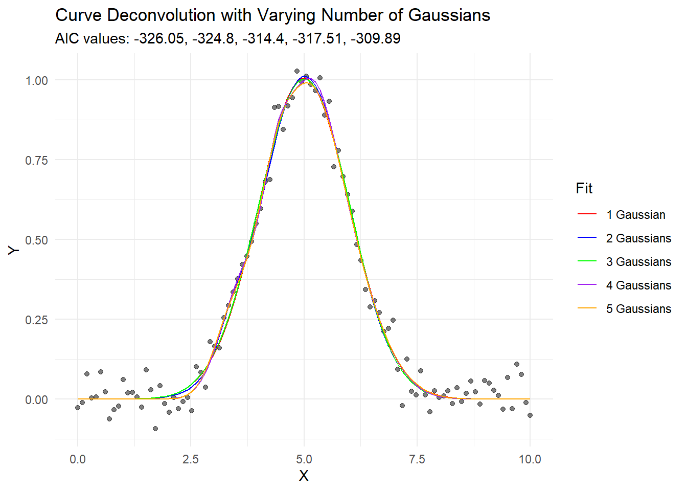
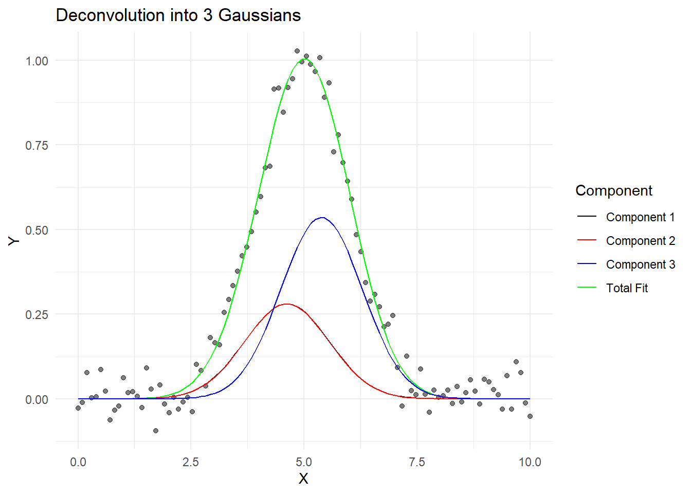

The Pitfall of Arbitrary Curve Deconvolution: A Cautionary Tale for Scientists and Students
Essential
Tutorial
Author
Giorgio Luciano & AI
Published
October 11, 2024
As scientists and data analysts, we often encounter complex curves in our work. These could be spectroscopic data, chromatograms, or any other type of signal that appears as a single peak but might be composed of multiple underlying components. The process of breaking down such a curve into its constituent parts is known as curve deconvolution or peak fitting.
It’s a common scenario: a researcher or student successfully decomposes a curve into two or three components, and they’re thrilled with the result. It seems to fit well, and they’re ready to draw conclusions based on these components. But there’s a crucial point that’s often overlooked: the number of components used in the deconvolution is often arbitrary.
In this post, we’ll explore why this is problematic and demonstrate how we can fit a curve with a varying number of components using R. This exercise will highlight why we should be cautious about interpreting the results of curve deconvolution without careful consideration.
Let’s start with some R code that generates a simple curve and then fits it with a varying number of Gaussian components:
# Load necessary librarieslibrary(minpack.lm)library(ggplot2)# Function to generate a Gaussian curvegaussian <-function(x, amp, cen, wid) { amp *exp(-((x - cen)^2) / (2* wid^2))}# Generate sample data (a curve with a single peak)set.seed(123)x <-seq(0, 10, length.out =100)y <-gaussian(x, 1, 5, 1) +rnorm(100, sd =0.05)data <-data.frame(x = x, y = y)# Function to create a model with n Gaussianscreate_n_gaussian_model <-function(n) { components <-paste0("gaussian(x, amp", 1:n, ", cen", 1:n, ", wid", 1:n, ")", collapse =" + ")as.formula(paste("y ~", components))}# Function to fit n Gaussiansfit_n_gaussian <-function(data, n) { model <-create_n_gaussian_model(n) start_list <-as.list(rep(c(0.5, 5, 1), n))names(start_list) <-c(rbind(paste0("amp", 1:n), paste0("cen", 1:n), paste0("wid", 1:n))) fit <-nlsLM(model, data = data, start = start_list)return(fit)}# Fit with varying number of Gaussiansfits <-lapply(1:5, function(n) fit_n_gaussian(data, n))
Warning in nls.lm(par = start, fn = FCT, jac = jac, control = control, lower = lower, : lmdif: info = -1. Number of iterations has reached `maxiter' == 50.
Warning in nls.lm(par = start, fn = FCT, jac = jac, control = control, lower = lower, : lmdif: info = -1. Number of iterations has reached `maxiter' == 50.
Warning in nls.lm(par = start, fn = FCT, jac = jac, control = control, lower = lower, : lmdif: info = -1. Number of iterations has reached `maxiter' == 50.
# Calculate AIC for each fitaics <-sapply(fits, AIC)# Create predictions and components for each fitfor (i in1:length(fits)) { data[paste0("fit", i)] <-predict(fits[[i]], newdata = data) params <-coef(fits[[i]])for (j in1:i) { data[paste0("comp", j, "_", i)] <-gaussian(data$x, params[paste0("amp", j)], params[paste0("cen", j)], params[paste0("wid", j)]) }}# Plot the resultsggplot(data, aes(x = x)) +geom_point(aes(y = y), alpha =0.5) +geom_line(aes(y = fit1, color ="1 Gaussian")) +geom_line(aes(y = fit2, color ="2 Gaussians")) +geom_line(aes(y = fit3, color ="3 Gaussians")) +geom_line(aes(y = fit4, color ="4 Gaussians")) +geom_line(aes(y = fit5, color ="5 Gaussians")) +scale_color_manual(values =c("red", "blue", "green", "purple", "orange")) +labs(title ="Curve Deconvolution with Varying Number of Gaussians",subtitle =paste("AIC values:", paste(round(aics, 2), collapse =", ")),x ="X", y ="Y", color ="Fit") +theme_minimal()

# Plot individual components for the 3-Gaussian fitggplot(data, aes(x = x)) +geom_point(aes(y = y), alpha =0.5) +geom_line(aes(y = fit3, color ="Total Fit")) +geom_line(aes(y = comp1_3, color ="Component 1")) +geom_line(aes(y = comp2_3, color ="Component 2")) +geom_line(aes(y = comp3_3, color ="Component 3")) +scale_color_manual(values =c("black", "red", "blue", "green")) +labs(title ="Deconvolution into 3 Gaussians",x ="X", y ="Y", color ="Component") +theme_minimal()

This code generates a single peak and then fits it with 1 to 5 Gaussian components. It then plots the results and calculates the Akaike Information Criterion (AIC) for each fit.
What we see from this exercise is striking:
All fits, from 1 to 5 components, appear to fit the data reasonably well visually.
The AIC values generally decrease as we add more components, suggesting that more complex models fit the data better.
However, here’s the crucial point: our original data was generated from a single Gaussian curve with added noise. Despite this, we can “successfully” decompose it into 2, 3, 4, or even 5 components, each of which might seem meaningful if we didn’t know the true origin of the data.
This demonstrates a fundamental issue in curve deconvolution: without additional information or constraints, we can often fit a curve with an arbitrary number of components, and purely statistical measures might even suggest that more components provide a better fit.
So, what should we do? Here are some guidelines:
Always consider the physical or chemical meaning behind the components. Does it make sense in your specific context to have 2, 3, or more components?
Use multiple criteria for model selection, not just visual fit or a single statistical measure. AIC, BIC, cross-validation, and other techniques can provide different perspectives.
Be cautious about over-interpretation. Just because you can fit a curve with multiple components doesn’t necessarily mean those components represent real, distinct physical or chemical entities.
When possible, use additional experimental techniques to validate your deconvolution. For example, in spectroscopy, you might use different types of spectroscopy or chemical separation techniques to confirm the presence of multiple components.
Always report the uncertainty in your fits and be transparent about the assumptions made in your analysis.
In conclusion, while curve deconvolution can be a powerful tool, it’s crucial to approach it with caution and skepticism. The ability to fit a curve with multiple components doesn’t always reflect the underlying reality of the system you’re studying. As scientists and data analysts, it’s our responsibility to critically evaluate our methods and results, always keeping in mind the limitations and potential pitfalls of our analytical techniques.